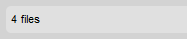

Li拧ta stavu (Status Bar) je um铆st臎na v doln铆 膷谩sti rozhran铆 CKFinder, kter谩 zobrazuje informace o zvolen茅m souboru, celkov媒 po膷et soubor暖 ve slo啪ce, atd.
Pokud je v CKFinder vybr谩n soubor, Li拧ta stavu zobraz铆 podrobn茅 informace o tomto souboru, v膷etn臎 jeho n谩zvu, velikosti a data jeho posledn铆 zm臎ny. Nap艡铆klad:

Pokud nejsou vybr谩ny 啪谩dn茅 soubory, bude m铆sto toho v Li拧t臎 stavu zobrazen celkov媒 po膷et soubor暖 v sou膷asn茅 slo啪ce. Nap艡铆klad:

Pokud je slo啪ka pr谩zdn谩, Li拧ta stavu zobraz铆 odpov铆daj铆c铆 zpr谩vu. Nap艡铆klad: